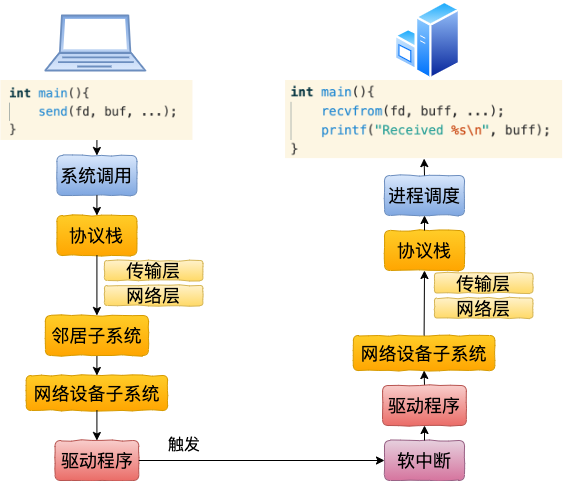

容器网络虚拟化
veth设备对

send系统调用
SyS_sendto(long fd, long buff, long len, long flags, long addr, long addr_len) (linux-4.6.2\net\socket.c:1616)
|-SYSC_sendto(int fd, void * buff, size_t len, unsigned int flags, struct sockaddr * addr, int addr_len) (linux-4.6.2\net\socket.c:1648)
|-sock_sendmsg(struct socket * sock, struct msghdr * msg) (linux-4.6.2\net\socket.c:622)
|-sock_sendmsg_nosec() (linux-4.6.2\net\socket.c:612)
|-sock->ops->sendmsg(sock, msg, msg_data_left(msg)) // 即是AF_INET协议族的inet_sendmsg
|-inet_sendmsg(struct socket * sock, struct msghdr * msg, size_t size) (linux-4.6.2\net\ipv4\af_inet.c:740)
|-sk->sk_prot->sendmsg(sk, msg, size) // 对应的方法是raw_sendmsg
网络层：
raw_sendmsg(struct sock * sk, struct msghdr * msg, size_t len) (linux-4.6.2\net\ipv4\raw.c:655)
|-ip_push_pending_frames(struct sock * sk, struct flowi4 * fl4) (linux-4.6.2\net\ipv4\ip_output.c:1460)
|-ip_send_skb(struct net * net, struct sk_buff * skb) (linux-4.6.2\net\ipv4\ip_output.c:1440)
|-ip_local_out(struct net * net, struct sock * sk, struct sk_buff * skb) (linux-4.6.2\net\ipv4\ip_output.c:112)
|-dst_output() (linux-4.6.2\include\net\dst.h:504)
|-ip_output(struct net * net, struct sock * sk, struct sk_buff * skb) (linux-4.6.2\net\ipv4\ip_output.c:355)
|-NF_HOOK_COND() (linux-4.6.2\include\linux\netfilter.h:233)
|-ip_finish_output(struct net * net, struct sock * sk, struct sk_buff * skb) (linux-4.6.2\net\ipv4\ip_output.c:281)
|-ip_finish_output2(struct net * net, struct sock * sk, struct sk_buff * skb) (linux-4.6.2\net\ipv4\ip_output.c:206)
|-dst_neigh_output(struct dst_entry * dst, struct neighbour * n, struct sk_buff * skb) (linux-4.6.2\include\net\dst.h:467)
邻居子系统：
dst_neigh_output(dst, neigh, skb)
|-n->output(n, skb) // 即是neigh_resolve_output
|-neigh_resolve_output(neigh, skb)
|-dev_queue_xmit(struct sk_buff * skb) (linux-4.6.2\net\core\dev.c:3394)
网络设备子系统
dev_queue_xmit(struct sk_buff * skb) (linux-4.6.2\net\core\dev.c:3394)
|-__dev_queue_xmit(struct sk_buff * skb, void * accel_priv) (linux-4.6.2\net\core\dev.c:3360)
|-dev_hard_start_xmit(struct sk_buff * first, struct net_device * dev, struct netdev_queue * txq, int * ret) (linux-4.6.2\net\core\dev.c:2888)
|-xmit_one(struct sk_buff * skb, struct net_device * dev, struct netdev_queue * txq, bool more) (linux-4.6.2\net\core\dev.c:2871)
|-netdev_start_xmit() (linux-4.6.2\include\linux\netdevice.h:3937)
|-__netdev_start_xmit() (linux-4.6.2\include\linux\netdevice.h:3928)
|-ops->ndo_start_xmit(skb, dev) // 即是loopback_xmit
驱动程序
struct net_device_ops veth_netdev_ops = {
.ndo_init = veth_dev_init,
.ndo_open = veth_open,
.ndo_stop = veth_close,
.ndo_start_xmit = veth_xmit,
.ndo_get_stats64 = veth_get_stats64,
.ndo_set_mac_address = eth_mac_addr,
}
veth_xmit(struct sk_buff * skb, struct net_device * dev) (linux-4.6.2\drivers\net\veth.c:122)
|-dev_forward_skb(struct net_device * dev, struct sk_buff * skb) (linux-4.6.2\net\core\dev.c:1803)
|-netif_rx_internal(struct sk_buff * skb) (linux-4.6.2\net\core\dev.c:3768)
|-enqueue_to_backlog(struct sk_buff * skb, int cpu, unsigned int * qtail) (linux-4.6.2\net\core\dev.c:3725)
|-____napi_schedule(struct softnet_data * sd, struct napi_struct * napi) (linux-4.6.2\net\core\dev.c:3419)
软中断->驱动程序->网络设备子系统->协议栈->进程调度和lo设备完全一样，省略。。。